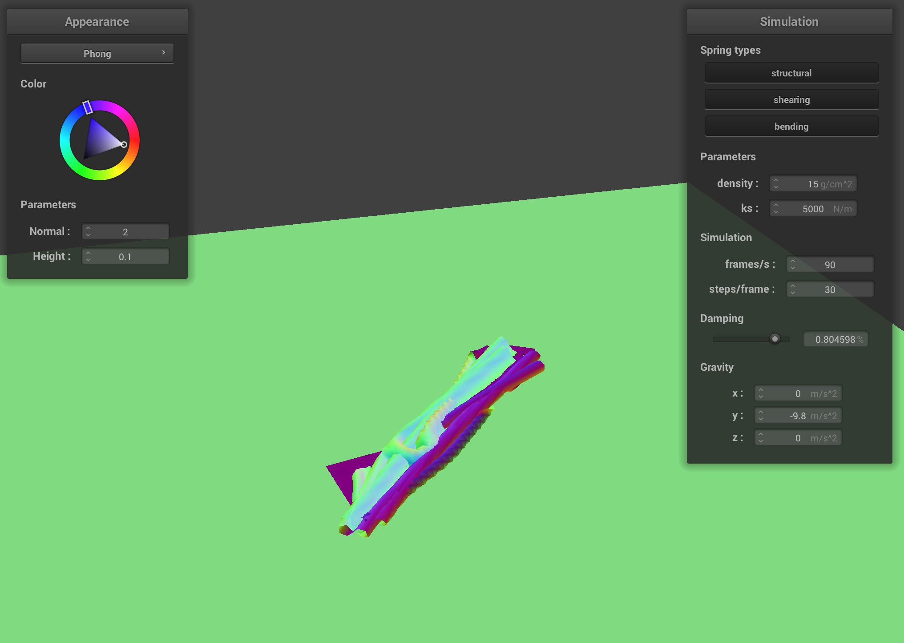
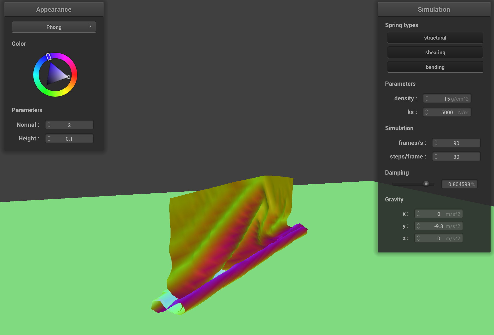
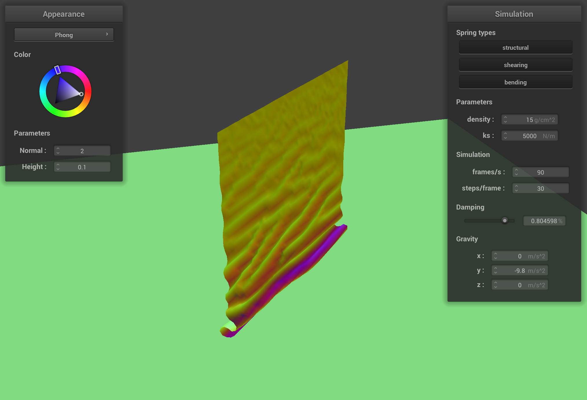

CS184 Project 4: Cloth Simulator
https://samkim2025.github.io/cs184/4/index.html
Overview
In this assignment, I implemented core algorithms for Bézier curve and surface evaluation, vertex normal computation, and mesh subdivision techniques, including edge flips, splits, and Loop subdivision. The Bézier curve and patch implementations use de Casteljau’s algorithm to recursively compute intermediate points, ensuring smooth interpolation. The vertex normal calculation uses area-weighted triangle normals to provide a better approximation of smooth shading. The mesh subdivision methods allow for refining geometry while maintaining consistency, leveraging edge flips and splits for uniformity. Through this work, I gained insight into the mathematical foundations of geometric modeling and the impact of different data structures on computational efficiency and accuracy.
Part 1: Masses and Springs
1. Take some screenshots of scene/pinned2.json from a viewing angle where you can clearly see the cloth wireframe to show the structure of your point masses and springs.
2. Show us what the wireframe looks like (1) without any shearing constraints, (2) with only shearing constraints, and (3) with all constraints.
Wireframe without any shearing constraints

Wireframe with only shearing constraints

Wireframe with all constraints

Part 2: Simulation via Numerical Integration
1. Experiment with some the parameters in the simulation. To do so, pause the simulation at the start with P, modify the values of interest, and then resume by pressing P again. You can also restart the simulation at any time from the cloth’s starting position by pressing R.
Describe the effects of changing the spring constant ks; how does the cloth behave from start to rest with a very low ks? A high ks? What about for density? What about for damping? For each of the above, observe any noticeable differences in the cloth compared to the default parameters and show us some screenshots of those interesting differences and describe when they occur.
2. Show us a screenshot of your shaded cloth from scene/pinned4.json in its final resting state! If you choose to use different parameters than the default ones, please list them.
Wall-E

Part 3: Handling collisions with other objects
1. Describe your implementation of handling collisions with spheres and planes.
2. Show us screenshots of your shaded cloth from scene/sphere.json in its final resting state on the sphere using the default ks = 5000 as well as with ks = 500 and ks = 50000. Describe the differences in the results.
Wireframe without any shearing constraints
Wireframe with only shearing constraints
Wireframe with all constraints
3. Show us a screenshot of your shaded cloth lying peacefully at rest on the plane. If you haven’t by now, feel free to express your colorful creativity with the cloth! (You will need to complete the shaders portion first to show custom colors.)
CB Bunny - 1 Light Ray

Part 4: Handling self-collisions
1. Describe your implementation of handling self-collisions.
My implementation of indirect lighting follows a recursive Monte Carlo path tracing approach. When a ray hits a surface, I first handle direct illumination, then sample new rays for indirect light. I use the BSDF's sample_f function to generate a random direction based on the material's properties, transform it to world space, and cast a new ray.
If this ray hits another object, I recursively evaluate the light at that point, continuing until I hit the ray depth limit or terminate via Russian Roulette. For each bounce, I properly account for BSDF value, cosine term, and PDF to calculate the contribution according to the rendering equation. This recursive approach elegantly captures all light transport paths through the scene, including subtle effects like color bleeding from colored walls onto the bunny.
2. Show us at least 3 screenshots that document how your cloth falls and folds on itself, starting with an early, initial self-collision and ending with the cloth at a more restful state (even if it is still slightly bouncy on the ground).
Wireframe without any shearing constraints
Wireframe with only shearing constraints
Wireframe with all constraints
3. Vary the density as well as ks and describe with words and screenshots how they affect the behavior of the cloth as it falls on itself.
Bunny - Indirect Illumination: 1024 samples/pixel

Bunny - Direct Illumination: 1024 samples/pixel

Sphere - Global Indirect Illumination: 1024 samples/pixel

Sphere - Global Direct Sampling: 1024 samples/pixel

Part 5: Cloth Sim
1. Explain in your own words what is a shader program and how vertex and fragment shaders work together to create lighting and material effects.
2. Explain the Blinn-Phong shading model in your own words. Show a screenshot of your Blinn-Phong shader outputting only the ambient component, a screen shot only outputting the diffuse component, a screen shot only outputting the specular component, and one using the entire Blinn-Phong model.
3. Explain in your own words what is a shader program and how vertex and fragment shaders work together to create lighting and material effects.
4. Show a screenshot of your texture mapping shader using your own custom texture by modifying the textures in /textures/.
5. Show a screenshot of bump mapping on the cloth and on the sphere. Show a screenshot of displacement mapping on the sphere. Use the same texture for both renders. You can either provide your own texture or use one of the ones in the textures directory, BUT choose one that’s not the default texture_2.png. Compare the two approaches and resulting renders in your own words. Compare how your the two shaders react to the sphere by changing the sphere mesh’s coarseness by using -o 16 -a 16 and then -o 128 -a 128.
6. Show a screenshot of your mirror shader on the cloth and on the sphere.
7. Explain what you did in your custom shader, if you made one.